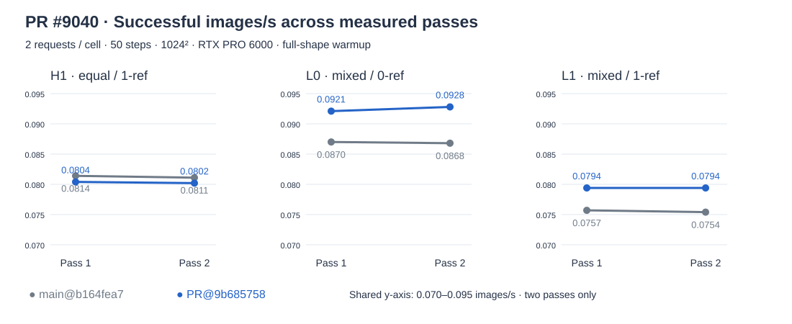
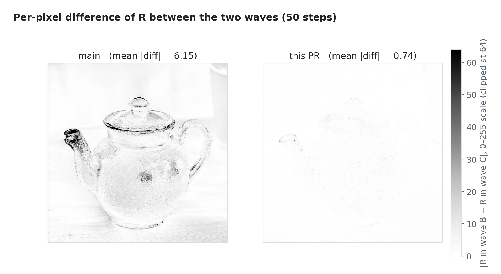
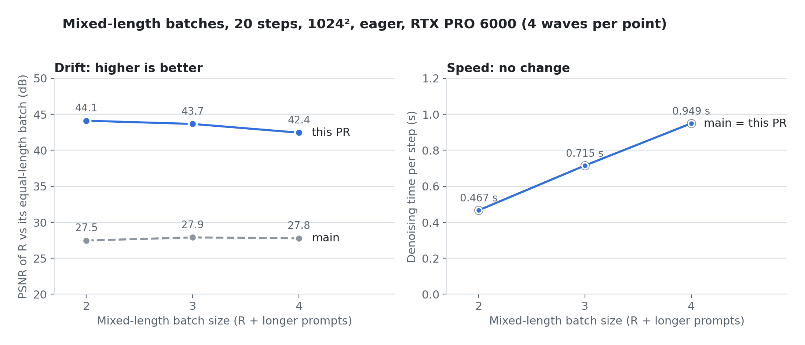
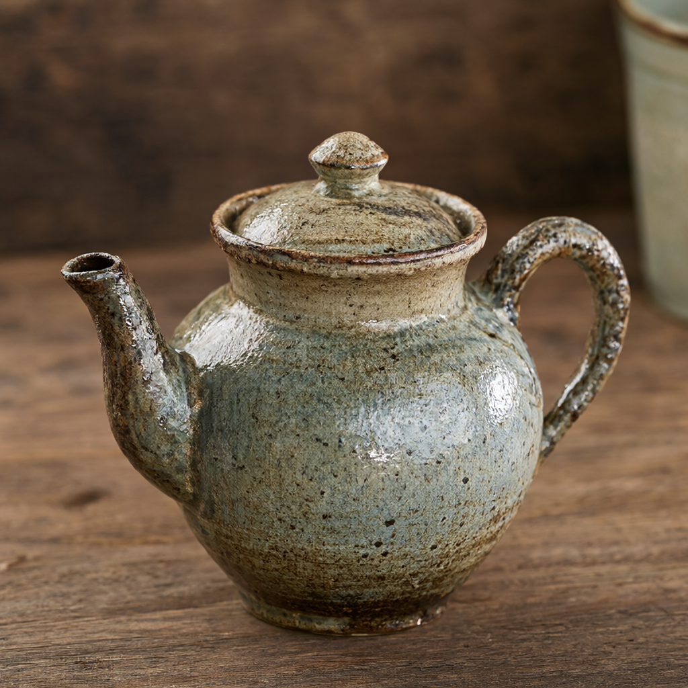
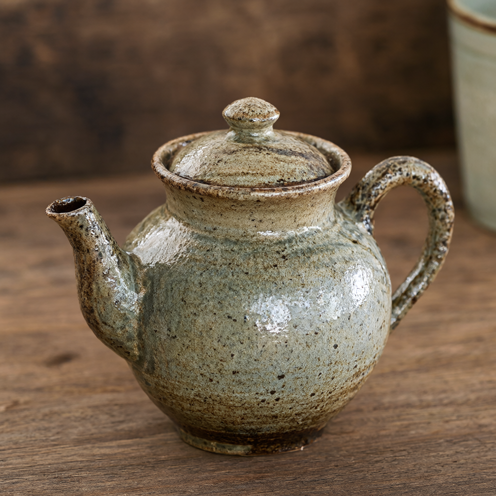
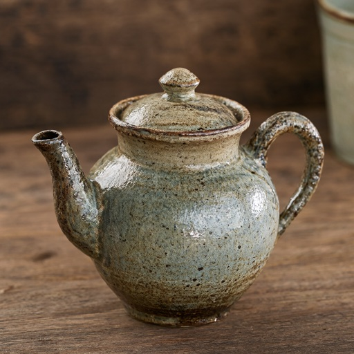

VLLM-OMNI · QWEN-IMAGE-2.1 · 持续优化
Qwen-Image推理优化：
从混合batch吞吐到 RoPE 一致性。
从Qwen-image推理性能优化需求出发，以混合 batch 为切入点。在提升吞吐的过程中，输出对照又暴露了 RoPE 位置编码问题，形成 #9040 与 #10376 两个 PR
01 · 社区需求 / ISSUE #8586
Qwen-Image-2.1 已支持推理，下一步是提高服务效率。
社区优化任务 #8586提出低延迟、高吞吐和显存效率三个方向。我参与其中的高吞吐优化：剖析不同 prompt 长度、参考图数量与尺寸的编辑 batch，减少 padding、packing 和 sub-batch 开销，同时保持请求顺序与条件隔离。
预期目标：在并发下最大化成功 images/s，并同时报告 p50 / p95 / p99 延迟及失败情况。
02 · 切入混合 BATCH / PR #9040
按 prompt 长度分组，减少 padding 引起的 CUDA Graph 回退。
问题
Profiling 发现，相同参考图布局的请求仍可能有不同文本长度。合批后短 prompt 需要 padding，main 日志记录了 padded-text-mask eager fallback，decode 无法使用 CUDA Graph。
方法 · 启用 CUDA Graph 时，按 prompt 长度分组
在原有合批条件上加：模型实际读到的 prompt 必须有相同的 token 数。比如 24 和 56 个 token 的请求分开执行，两个 24 token 的请求仍可合批，避免为对齐长度补 padding。
CFG（无分类器引导）用来引导生成结果。启用 true CFG 时，模型还会处理负向 prompt。关闭 CUDA Graph 或无法计算 token 数时，沿用原分组规则。
结论
混合长度 0-ref / 1-ref 吞吐分别提高 6.4% / 5.1%，同长度对照下降 1.2%。main 与 PR 各 12/12 请求成功。查看 PR #9040 ↗

展开实现与测量：padding、兼容性分组和逐组结果
01 · 性能瓶颈：padding 触发 eager 回退
合批要求文本张量等长，短 prompt 左侧补 padding。
同一批请求的文本张量需要对齐形状，短 prompt 因而需要 padding。本次混合长度测试中，main 日志记录了 padded-text-mask eager fallback：带 padding 的文本掩码使 decode 无法使用 CUDA Graph。优化切入点是调整合批条件，减少这种回退。下方可改变请求 B 的长度，观察 padding 的变化；token 数为示意。
蓝色是真实 token，斜纹是 padding。token 数为示意。
02 · 实现：长度感知的合批条件
prompt 长度纳入合批兼容性 key，等长请求仍然合批。
在现有 batch compatibility key 中加入模板化后的 positive prompt token 数；启用 true CFG 时，同时加入 negative prompt token 数。准入检查与实际编码复用同一套 prompt 模板，避免长度估计不一致。eager、graph-disabled 或 tokenizer 不可用时保留原有组批规则，negative prompt 是否存在仍参与兼容性判断。请求顺序由现有调度器保持。
请求与长度为示意；分组规则与 PR 描述一致。请求顺序由原有调度器保持。
03 · 实测吞吐
混合长度组吞吐提高 5.1%–6.4%，等长对照下降 1.2%。
对比 main@b164fea7 与 PR 实现 9b685758，使用相同模型、输入与服务配置：1× RTX PRO 6000、BF16、1024²、50 步、max_num_seqs=4、batch wait=500 ms。每组包含 2 个请求，预热后测量两轮，吞吐按成功图片数除以组内墙钟时间计算。两侧各 12/12 请求成功，PR 的 54 项兼容性测试通过。该小样本对照尚不足以评估 p95/p99 尾延迟。
03 · 从性能验证发现一致性问题 / PR #10376
同一个生成请求，换一批一起运行的请求，出图就变了。
问题
验证 #9040 时发现，同一请求与更长的 prompt 合批后，生成图像会变。短 prompt 补齐到批内最大长度后，图像的 RoPE 起始位置也被推后，例如从 17 变为 64。
方法 · 用逐请求掩码修正 RoPE 帧位置
把每个请求的文本有效掩码传给 RoPE 计算，从共享帧索引中减去该请求自己的左侧 padding 数。请求 R 因此从 64 回到 17，图像的高、宽轴频率仍在批内共享。这一修正保留混合长度合批，在 CUDA 上的多请求、有文本 padding 且未启用序列并行时生效。
结论
50 步等长与混合长度批次的 PSNR 从 27.66 提高到 45.16 dB，SSIM 从 0.964 提高到 0.997。批大小 2/3/4 的测试均改善，已测 SM120 配置下去噪每步耗时相同。查看 PR #10376 ↗


展开定位过程：复现图、RoPE 机制、消融与测试边界
04 · 对照输出时发现的问题
同长度对照输出一致，混合长度输出存在可重复差异。
H1 的 4 对输出逐像素一致；L0 和 L1 则出现可重复的图像差异。L0 的 PR 输出与独立串行参考图 SHA-256 一致，支持这些输入上的差异来自 main 的混合长度批次上下文。这项检查验证了已测输入的请求映射与参考一致性，不代表普遍的图像质量保证。
| 组 / 请求 | PSNR (dB) vs main | SSIM | 观察 |
|---|---|---|---|
| H1 · 两个请求 | 相同 | 1.00000 | 4 / 4 对输出逐像素一致 |
| L0 · 短 prompt | 28.77 | 0.97213 | #9040 输出与串行参考 SHA-256 一致 |
| L0 · 长 prompt | 36.85 | 0.99184 | #9040 输出与串行参考 SHA-256 一致 |
| L1 · 短 prompt | 46.61 | 0.99646 | 同批上下文差异较小 |
| L1 · 长 prompt | 56.87 | 0.99883 | 同批上下文差异较小 |


L0 短 prompt 的输出对照，PSNR 28.77 dB。右侧使用已存档的串行参考图；不将该案例推导为普遍准确率结论。点击可查看原图。
05 · 复现：固定请求，改变批次组成
等长批次输出接近，混合长度批次明显漂移。
在 eager 服务下固定请求 R 的 prompt、seed 和参数，分别单独运行、放进 3 个等长 prompt 的批次 (wave B)、放进带两个更长 prompt 的批次 (wave C)。调度日志确认两个 wave 都是真实的 3 请求批次。PSNR 都是和单独运行比。

参照

43.99 dB

27.94 dB
图片来自 PR 描述，50 步。本次测试中，等长批与单独运行的 PSNR 为 43.99 dB，作为批处理数值差异的参照。
06 · 根因
图像 RoPE 帧位置，随整批 padding 后的文本长度偏移。
RoPE 给每个 token 编码位置。QwenImage21Rope.forward 为整批只建一张表：文本 token 推进一个共享的位置计数，图像块的帧轴位置从它接着算。文本按整批最长的 prompt 左侧补齐。R 的 17 个文本 token 前面多了 47 个 padding，图像的帧位置由 17 变为 64，导致位置编码依赖其他请求的文本长度。
斜纹是 padding，蓝色是 R 的文本，绿色是 R 的图像 token。长度按比例示意。
07 · 消融实验：定位 RoPE 位置偏移
修正图像帧位置后，第一层注意力输出差异显著下降。
批次之间不只 RoPE 不同：文本编码器的输出、DiT 注意力掩码的路径也会变。在 8 步去噪下依次消掉这些差异，每一步都测 R 在 wave B 与 wave C 之间的 PSNR。
统一文本编码器输出、统一注意力掩码执行路径后，漂移未改善。将 R 的图像帧位置恢复为 17 后，第一层 DiT 注意力输出的平均绝对差由 0.375 降至 0.0017，支持将根因定位到图像 RoPE 帧位置。
条形只表示定性结论，逐步 PSNR 见 PR 原图。“硬编码位置”只对这一批里的 R 正确，会让更长的请求拿到错误位置，所以它是诊断，不是修复。
08 · 修复
按各请求自身 padding 回退帧位置，RoPE 表改为逐请求计算。
文本有 padding 时，QwenImage21SequencePrepare 把逐请求的文本有效掩码传给 QwenImage21Rope。每一行的帧索引减去这一行自己的 padding 数，于是每个请求拿到的位置和它单独运行时一样。高、宽方向的频率不变，仍然共享。
只有同时满足这四个条件才走新路径；等长批、单请求、序列并行和非 CUDA 设备仍用原来的二维表。和 #9040 的分工是：#9040 调整 graph-eligible 请求的兼容性分组；#10376 修正混合长度批次的逐请求位置编码，保留原有合批能力，并可独立使用。
09 · 结果
输出一致性提高，已测配置的去噪每步耗时相同。
50 步时，R 在等长批与混合长度批之间的 PSNR 从 27.66 dB 升到 45.16 dB，SSIM 0.964 → 0.997，与本次单请求和等长批之间的 43.99 dB 参照接近。
进一步验证批大小变化：20 步，每个测试点包含 4 个 wave（main 和 #10376 在两张卡上并行，再交换卡重跑），52 个请求全部成功。漂移是 R 相对同次运行中等长批 R 的 PSNR。
| 批次 | main | #10376 |
|---|
10 · 验证与边界
两个 PR 的测试覆盖，与尚未验证的边界。
- #9040：54 个针对性兼容测试通过，覆盖正负 prompt 长度、省略与空 negative prompt、等长合批、混合长度分开、两种调度器和 graph 关闭回退。
- #10376：新增 3 个单元测试，左侧 padding 批次每一行的频率与该请求单独计算一致，批量与逐请求旋转结果一致；
qwen_image_21测试目录 246 通过、10 跳过（main 243 通过）。等长批下与 main 输出逐位相同。
- #9040 只有两次测量，只支持局部吞吐结论；合入新 main 后 GPU 推理和针对性测试尚未重跑；未覆盖 4 张参考图、多 GPU、2048²。
- #10376 输出明显更接近，但不是逐位批不变；速度在 SM120 上测量，SM103 + PyTorch 2.13 上混合长度批会失去融合 RoPE kernel，未测；未测图像编辑、true CFG、CUDA Graph 服务、序列并行、非 CUDA 设备。
04 · 后续计划 / ISSUE #10453 · 尚未实现
将 Qwen-Image 的请求级准备数据接入共享生命周期。
#10453提出由框架统一管理 prepared denoise inputs。我计划参与 Qwen-Image2.1 部分，将已有请求级 geometry/metadata 的准备、失效和清理接入共享机制，并保留 prefix-KV 语义、平台 kernel 和独立的 decode-graph 生命周期。
验证重点是 batch 重排、请求交错、CFG 分支、取消和图重放时的数据有效性与释放。共享 modulation 属于 step 级数据，不能跨时间步作为请求常量复用。迁移先与最新优化基线验证一致性，再单独测量绑定开销、延迟和显存；目前没有可报告的新收益。
这条路线从混合 batch 的具体性能瓶颈，推进到逐请求的位置语义，再延伸到准备数据的框架化管理。